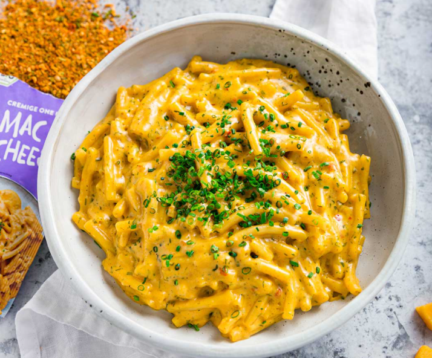

Hamburger Steaks Recipe
Hamburger steaks are a simply-flavored patty mixture and the omission of tomato-based ingredients like tomato paste and ketchup, resulting in an unadulterated, beefier bite. It's easy and foolproof and completely worthy of your dinner table, especially considering it'll be ready in under an hour. Serve it over a bed of mashed potatoes, a healthy salad, or with Parker House rolls.
Macaroni and Cheese
A very quick and easy fix to a tasty side-dish. Fancy, designer mac and cheese often costs forty or fifty dollars to prepare when you have so many exotic and expensive cheeses, but they aren't always the best tasting. This recipe is cheap and tasty.

Ingredients
- 1 (8 ounce) box elbow macaroni
- ¼ cup butter
- ½ teaspoon salt
- ground black pepper to taste
- 2 cups milk
- 2 cups shredded Cheddar cheese
- ¼ cup all-purpose flour
Steps
- Bring a large pot of lightly salted water to a boil. Cook elbow macaroni in the boiling water, stirring occasionally until cooked through but firm to the bite, 8 minutes. Drain.
- Melt butter in a saucepan over medium heat; stir in flour, salt, and pepper until smooth, about 5 minutes. Slowly pour milk into butter-flour mixture while continuously stirring until mixture is smooth and bubbling, about 5 minutes. Add Cheddar cheese to milk mixture and stir until cheese is melted, 2 to 4 minutes.
- Fold macaroni into cheese sauce until coated.